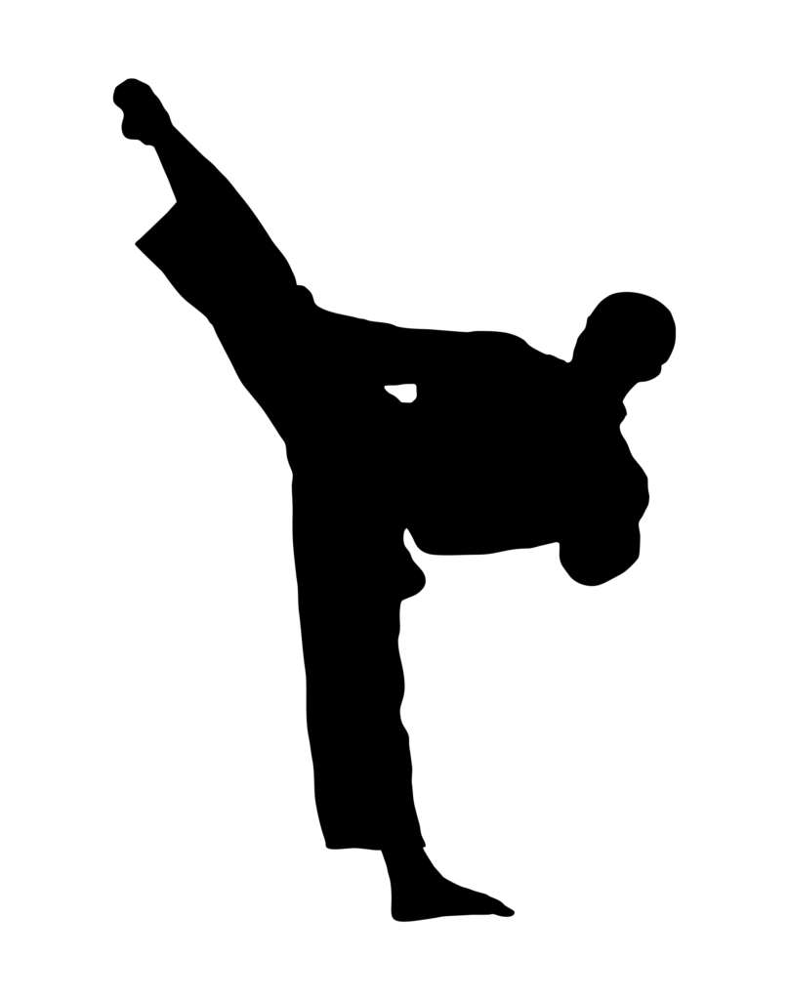

MI PADRE
Mi familia en total son cuatro personas, asi que vayamos
por partes.
MI PADRE:
PROFESIÓN: Otorrinolaringólogo
EDAD: 55 años
DESCRIPCIÓN: Una persona que le tocó vivir tiempos difíciles, una infancia dificil
que aún así salió adelante. Por muchos factores, decidió ir a por la
rama de la medicina y convirtiendose un otorrino profesional.
Antaño le gustaba mucho los juegos, pero con el tiempo los
dejó y bueno, no los ve con buenos ojos como antes.
Él me impulsó a estudiar Diseño Digital.
MI MADRE
PROFESIÓN: Patóloga
EDAD: 57 años
DESCRIPCIÓN: Una persona con carácter fuerte, asi que ya
se puede imaginar cómo fue mi crianza. Viene de una familia
numerosa y unida, al parecer viene de los genes el carácter
ya que mi abuelo era parecido. Es patóloga e investiga sobre
bacterias y cuerpos extraños que recorren el cuerpo humano.
Lastimosamente esto le afectó negativamente la vista, por
el prolongado uso del microscopio.

MI HERMANO:
PROFESIÓN: Estudiante Universitario
EDAD: 26 años
DESCRIPCIÓN: Es el hijo mayor de la familia, actitud calmada
y serena, parecido a mi padre; practicaba Taekwondo cuando
era jóven y se le daba bien dar patadas. Tiene pensado practicar
Muay Thai en un futuro.
Le apasiona la Matemática, y ciencias pesadas, es muy directo
con las palabras, y claramente le encanta los videojuegos...
tiene una forma de disfrutar los juegos de
forma única, así que es divertido verle jugar.
Pésima idea hacerlo enojar.
